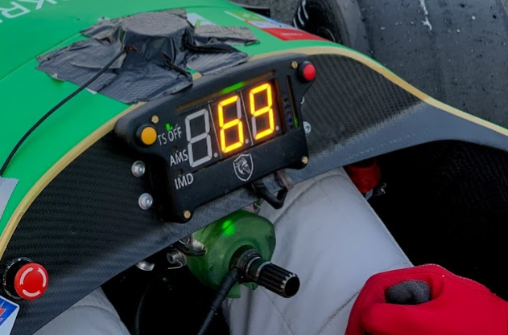

In this brief article I will present the user interface I have developed for the 2022 race car of the Formula student team in Ljubljana. The UI was completely redesigned this year. The goal was to use a color LCD and implement multiple screens for different use cases (racing, debugging the CAN bus, entertainment..) be changed from user’s input on the steering wheel. Team’s former cars have 7/14 segment displays:
